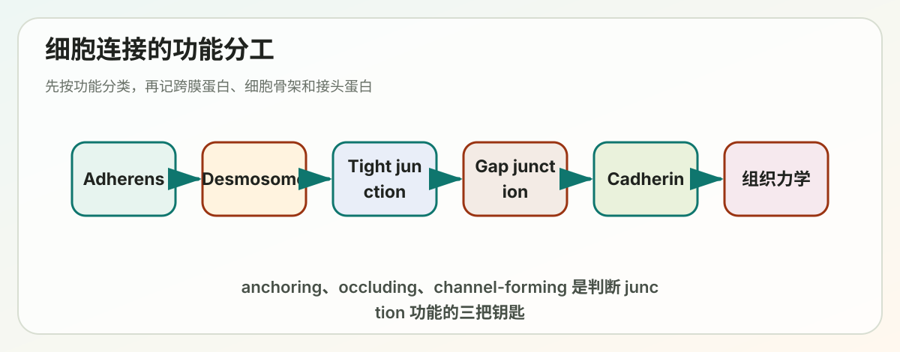

Lecture 17
Lecture 17: Cell Junctions, Cell Adhesion and Extracellular Matrix (I)

> 覆盖范围：Outline I–IV（70 张幻灯片中前 4 个章节） > 重点：cell–cell junctions 体系，cadherin / Ig / selectin 三大类黏附分子，tight junction 与 gap junction 的功能逻辑
---
课程脉络（一句话框架）
多细胞生物要把不同的细胞组装成有功能的组织，本质上要解决两件事：(1) 把细胞固定在正确位置；(2) 让细胞之间能传递机械力、化学信号和电信号。这就引出了三大功能模块——锚定连接（anchoring）、封闭连接（occluding）、通道连接（channel-forming）——以及它们各自的分子机器。
---
I. 细胞连接与细胞黏附的总体框架
1.1 为什么多细胞生物离不开它
- 聚合成组织：让细胞聚集为有边界、有形态的组织（Allow cells to aggregate into distinct tissues）
- 双向通讯：在细胞内外之间传递信号（Bidirectional communication）
- 控制四大基本命运：cell survival / proliferation / differentiation / migration
经典例证：斑马鱼神经管发育、接触抑制（contact inhibition，密度依赖性增殖停滞）。
1.2 上皮组织 vs 结缔组织的"力学逻辑"
| 组织类型 | 主要承力方式 | 主要连接模式 |
|---|---|---|
| 上皮组织（epithelial） | 由细胞骨架经 cell–cell / cell–matrix 黏附位点跨细胞传递力 | 以 cell–cell junctions 为主 |
| 结缔组织（connective） | 主要由 ECM 本身（胶原等）承受拉伸和压缩 | 以 cell–ECM adhesions 为主 |
理解记忆点：上皮像砖墙——细胞之间的"水泥"是 junctions；结缔组织像钢筋混凝土——基质（ECM）才是骨架，细胞像点缀其中的工人。
1.3 四大类细胞–细胞连接（必背骨架）
按"用途"分四类：
1. Adherens junction（黏着连接） — 锚定 actin filaments 2. Desmosome（桥粒） — 锚定 intermediate filaments 3. Occluding junction / Tight junction（紧密连接） — 封闭细胞间隙 4. Channel-forming junction / Gap junction（间隙连接） — 允许小分子通过
其中 1 + 2 合称 Anchoring junctions（锚定连接）。
平行的，cell–matrix anchoring junctions：
- Actin-linked cell–matrix junction（focal adhesion） — Integrin 介导，连 actin
- Hemidesmosome（半桥粒） — α6β4 integrin + type XVII collagen，连 intermediate filaments
1.4 跨膜黏附蛋白的两大类（核心二元结构）
| 分子 | 介导 | 典型连接 |
|---|---|---|
| Cadherins | cell–cell | adherens junction, desmosome |
| Integrins | cell–matrix | focal adhesion, hemidesmosome |
📌 记忆口诀：Cadherin 管"细胞对细胞"，Integrin 管"细胞对基质"。两者都可以连 actin 或 intermediate filaments，区别仅在"对面"是另一个细胞还是 ECM。
1.5 Table 19-1 整合记忆
| Junction | Transmembrane | Extracellular ligand | Cytoskeleton | Adaptor |
|---|---|---|---|---|
| Adherens | Classical cadherin | 对侧 classical cadherin | Actin | α/β/p120-catenin, vinculin |
| Desmosome | Desmoglein / Desmocollin (非经典 cadherin) | 对侧 desmoglein/desmocollin | Intermediate filaments | Plakoglobin, plakophilin, desmoplakin |
| Focal adhesion | Integrin | ECM 蛋白 | Actin | Talin, kindlin, vinculin, paxillin, FAK |
| Hemidesmosome | α6β4 integrin + type XVII collagen | ECM 蛋白 | Intermediate filaments | Plectin, BP230 |
> 🔑 一个"工程美学"问题（slide 20）：为什么两侧锚定的总是同一种细胞骨架？ 因为机械力要在细胞群中"连续地"传导，actin 网络要连 actin 网络，IF 网络要连 IF 网络，否则在界面处会出现"力学短路"。
---
II. 钙黏蛋白（Cadherins）与细胞–细胞黏附
1. Cadherin 家族
- 名字由来：Ca²⁺ + adherin → "钙依赖的黏附蛋白"
- 关键实验技巧：组织解离需要 EDTA（螯合 Ca²⁺，使 cadherin 失活）+ trypsin（切割表面蛋白）
- 进化分布：⚠️ 植物、真菌、细菌、古菌都没有 cadherin——cadherin 是动物多细胞性的标志之一
- 数量：人类基因组编码 >180 个家族成员，分 classical / non-classical 两大类
经典 cadherins（必记 4 个）
| 名称 | 主要分布 | 敲除表型 |
|---|---|---|
| E-cadherin | 多种上皮 | 囊胚期致死，胚胎不能压实（compaction） |
| N-cadherin | 神经元、心、骨骼肌、晶状体、成纤维细胞 | 心脏发育缺陷致死 |
| P-cadherin | 胎盘、表皮、乳腺上皮 | 乳腺发育异常 |
| VE-cadherin | 血管内皮细胞 | 血管发育异常（内皮细胞凋亡） |
非经典 cadherins（认得即可）
- Desmoglein / Desmocollin —— 皮肤桥粒；缺失导致皮肤水疱病
- T-cadherin —— GPI 锚定，无胞内域
- Cadherin 23 —— 内耳毛细胞静纤毛连接，缺失导致耳聋
- Fat / Fat1 —— 平面细胞极性（PCP）；缺失致果蝇成虫盘肿瘤、哺乳动物肾小球裂隙隔膜异常
- Protocadherins (α/β/γ) —— 神经元识别；几百种亚型组合产生神经元身份码
- Flamingo —— PCP 信号传递
2. Cadherin 的同亲性结合（homophilic binding）
- Homophilic：同种 cadherin 互相识别（E ↔ E, N ↔ N）
- Heterophilic：不同分子配对（cadherin 也可与部分蛋白异亲性结合，但 cadherin 的典型模式是 homophilic）
结构基础
- 胞外区有 5 个 cadherin repeats（EC domains）
- 重复结构之间的"hinge region"由 Ca²⁺ 桥联：
- >1 mM Ca²⁺：cadherin 伸展（rigid extended），可与对侧分子结合
- <0.05 mM Ca²⁺：cadherin 塌陷成柔软状态，无功能（解释 EDTA 解离机制）
集体效应：单分子弱、多分子强
单个 cadherin–cadherin 结合是低亲和力的，但通过侧向聚集成阵列（organized array），形成类似 "魔术贴（Velcro）" 的高强度黏附——这是为什么 adherens junction 在电镜下表现为 "belt"。
3. Cadherin 控制细胞分选（selective assortment）
经典实验：Nose A et al., Cell, 1988
- 把表达 E-cadherin 和 N-cadherin 的细胞混合 → 它们会自发"sorting out" 分离成两群
- 表达高水平 E-cadherin 的细胞会聚集到内层，低水平的到外层（differential adhesion hypothesis, Steinberg）
体内对应：神经管发育
- 神经板（ectoderm，E-cadherin） → 折叠时局部切换为 N-cadherin / cadherin-6B / cadherin-7 → 神经嵴细胞迁移 → 神经管闭合
- "Cadherin code" 决定哪些细胞聚在一起、哪些分离
3.5 Adherens junction（黏着连接）
结构核心
Cadherin（跨膜）
│
p120-catenin（稳定 cadherin）
β-catenin（连接）
α-catenin（连 actin，并招募 vinculin）
│
F-actin 束> ⚠️ β-catenin 双重身份：在 adherens junction 处是结构蛋白；当 Wnt 通路激活时，游离 β-catenin 进入核内充当转录共激活因子——这也是为什么 E-cadherin 缺失常与肿瘤侵袭/EMT 相关。
Adherens junction 的形成机制（cortical tension 模型）
1. 静息状态：细胞表面有 actomyosin 收缩产生的 cortical tension（皮层张力），类似水滴的表面张力，会"拉住"膜 2. 接触点：cadherin 在接触位点聚集 → 局部 Rac 激活、Rho 抑制 → cortical tension 下降 3. 扩展：张力解除后，接触面才能向外扩张 → 形成 adhesion belt（黏附带）
Rho GTPase 家族与 actin 重组（slide 31–32）
| GTPase | 效应 | 表型 |
|---|---|---|
| Rho | ROCK → MLC(P)↑ + formins → 应力纤维 | 强 stress fibers, focal adhesion |
| Rac | WASp → Arp2/3 → branched actin | Lamellipodia（片状伪足） |
| Cdc42 | WASp → Arp2/3 + formins | Filopodia（丝状伪足） |
上皮形态发生：从 sheet 到 tube（slide 35）
肌球蛋白 II 在 adhesion belt 上局部收缩 → 上皮片层在选定区域内陷 → 形成神经管/原肠这类上皮管。这是脊椎动物器官形成最常见的机制之一。
4. Desmosome（桥粒）
- 跨膜分子：非经典 cadherin —— desmoglein + desmocollin
- 胞内骨架：Intermediate filaments（角化细胞中为 keratin）
- 接头蛋白：plakoglobin（γ-catenin 同源物）、plakophilin、desmoplakin
- 功能：给细胞提供机械强度，承受拉伸（上皮中富集，特别是表皮）
- 进化点：⚠️ 果蝇没有 desmosome（其上皮主要靠 adherens junction 和 septate junction）
- 病理：天疱疮（pemphigus）抗 desmoglein 自身抗体 → 皮肤水疱
桥粒 vs 半桥粒（slide 39）
- Desmosome：cell–cell 连 IF
- Hemidesmosome：cell–基底膜，integrin α6β4 介导，胞内连 IF
- 两者共同把上皮整片"缝"在基底膜上，IF 网络在整个上皮中是力学连续的
5. Selectins（选择素）—— 血细胞黏附
- Ca²⁺ 依赖性
- 介导短暂性黏附（transient adhesion）
- 识别 lectins：与对侧细胞表面寡糖（碳水化合物）结合（不同于 cadherin 的蛋白–蛋白识别）
- 三种类型：
| Selectin | 分布 |
|---|---|
| L-selectin | 白细胞 |
| P-selectin | 血小板、内皮细胞 |
| E-selectin | 激活的内皮细胞 |
白细胞外渗 (extravasation) 四步走
weak rolling strong adhesion emigration
（selectin-dependent）（integrin-dependent） （穿越内皮）> 🩺 临床意义：抗 selectin 药物用于抗炎治疗，原理是阻断白细胞滚动这一限速步。
6. 免疫球蛋白超家族（Ig superfamily, IgSF CAMs）
- Ca²⁺ 非依赖（与 cadherin/selectin 最大区别）
- 结构特征：高度糖基化、多个二硫键稳定的 Ig-like domains
- 部分成员还有 fibronectin type III domains（如 NCAM）
- 可与 integrin 结合（异亲性）
重要成员
| 名称 | 分布与功能 |
|---|---|
| ICAMs (intercellular CAMs) | 内皮细胞，与白细胞 integrin 结合 |
| VCAMs (vascular CAMs) | 血管内皮，参与白细胞外渗 |
| NCAM (neural CAM) | 神经元识别、轴突导向 |
突触（synapse）是黏附分子的"交响乐"
在突触结构中，cadherin + Ig-superfamily + neurexin/neuroligin 共同协作把前后膜对齐、定位神经递质受体和支架蛋白。这是研究突触可塑性的核心议题。
🧩 Cadherin / Selectin / IgSF 速记对比表
| 维度 | Cadherin | Selectin | IgSF |
|---|---|---|---|
| Ca²⁺ 依赖 | 是 | 是 | 否 |
| 识别对象 | 蛋白（同型为主） | 寡糖 | 蛋白（多异亲） |
| 结合强度 | 集群后高 | 弱、瞬时 | 中等 |
| 典型场景 | adherens, desmosome | 白细胞滚动 | 免疫识别、神经突触 |
---
III. 封闭连接（Occluding / Tight junctions）
3.1 概览
- 仅存在于上皮细胞（脊椎动物为 tight junction，无脊椎动物对应物为 septate junction）
- 上皮细胞占脊椎动物所有细胞类型的 ~60%
- 所有上皮细胞都是 polarized（极性化）：apical（顶端）vs basal（基底）
3.2 三大功能
1. Fence（栅栏）：把质膜分隔为 apical 和 basolateral 两个 domain，阻止膜蛋白侧向扩散，是维持上皮极性的关键 2. Seal（屏障）：封闭细胞间隙，阻止分子从顶端经细胞间隙到达基底 3. Selective gate（选择性通道）：根据所含 claudin 种类不同，允许特定离子通过——形成 paracellular pathway
3.3 经典案例：肠上皮的跨细胞葡萄糖转运
肠腔（高浓度需求）
│ Na⁺-driven glucose symport（apical 顶端）
↓
细胞内（葡萄糖累积）
│ passive glucose carrier（basolateral 基底外侧）
↓
血液Tight junction 在这里的作用：保证 apical 和 basolateral 两种转运蛋白不会"互相扩散"，否则整个转运极性就会崩溃。
3.4 结构与分子
- 在冷冻断裂电镜下表现为 sealing strands（封闭索） —— 跨膜颗粒的脊状阵列
- 邻接细胞的 strands 在 focal connections 处相互接触
关键蛋白
| 蛋白 | 特点 |
|---|---|
| Claudin（~24 种人类成员） | 决定 tight junction 的离子选择性。敲除导致小鼠脱水死亡；在成纤维细胞中过表达可使其形成 tight junction |
| Occludin | 详细功能未明，可能调节屏障稳定性 |
| Tricellulin | 在三细胞交界处封闭膜 |
3.5 直观成像
Tight junction 蛋白在细胞接触后逐渐"凝聚"成沿细胞边界的连续带（slide 51），可以用 ZO-1 或 occludin 免疫荧光实时观察。
---
IV. 通道形成连接（Channel-forming junctions）
4.1 动物 vs 植物
| 物种 | 通道连接 |
|---|---|
| 动物 | Gap junction（缝隙连接） |
| 植物 | Plasmodesmata（胞间连丝） |
两者都允许小分子和无机离子在邻细胞间直接交换，极少情况下也可传递大分子。两者在上皮和结缔组织中都可存在（不像 tight junction 那样仅限上皮）。
4.2 Gap junction —— 动物的电/化学耦合通道
蛋白家族
- Connexin（脊椎动物为主，人类有 21 个 connexin）
- Innexin（果蝇 15 个 / 线虫 25 个）
- 序列不同但形状和功能相似 → 趋同进化
> 不同物种的 connexin/innexin 数量差异决定了 gap junction 选择性的多样性。
分子建筑
6 个 connexin → 一个 connexon（半通道）
2 个 connexon（来自相邻两细胞）→ 一个 gap junction channel- 通道直径 ~1.4 nm
- 细胞间间隙 ~2–4 nm（电镜下的特征性"gap"，故名 gap junction）
- 分子量截留 ~1000 Da（>1000 Da 通常通不过）
Connexon 的组装方式
- Homomeric vs Heteromeric（6 个亚基相同/不同）
- Homotypic vs Heterotypic（两侧的 connexon 相同/不同）
- 不同组合方式产生不同的通透性和选择性
动态性（slide 63）
- Gap junction plaque 快速组装、解聚、重塑
- 经典实验：用 4-Cys tag 染色，发现新 connexon 加在外圈，老 connexon 在中心——类似细胞骨架的踏车样动力学。
调控
- 关闭信号：低 pH、Ca²⁺ ↑
- 外源信号：例如多巴胺处理神经元会显著降低 gap junction 通透性（slide 65）
主要功能
| 细胞类型 | 功能 |
|---|---|
| 心肌细胞 | 同步收缩（intercalated disc） |
| 平滑肌（如肠道） | 协同蠕动 |
| 神经元 | 电突触（electrical synapse），传递速度远快于化学突触 |
| 非兴奋细胞（如肝细胞） | 代谢物、小分子信号共享 |
4.3 Plasmodesmata —— 植物的"超级通道"
> 🌱 对 Peter 这种植物背景的读者特别相关。
- 直径 20–40 nm（远大于 connexon）
- 由 desmotubule 贯通——desmotubule 是光滑内质网（SER）的延续
- 分子截留 ~800 Da（与 gap junction 类似，但严格调控）
与 gap junction 的本质区别
| 特征 | Gap junction | Plasmodesmata |
|---|---|---|
| 蛋白通道 | connexin/innexin 蛋白形成 | 由质膜+ER+细胞质组成的"管道" |
| 直径 | ~1.4 nm | 20–40 nm |
| 内含 | 仅细胞质连通 | 细胞质 + ER（desmotubule） |
| 调控分子 | callose、SEL（size exclusion limit）动态调节 | |
| 进化起源 | 动物独立起源 | 植物特有，进化独立 |
> 💡 延伸思考：plasmodesmata 在植物免疫（如 callose 沉积阻断病毒移动）、发育（如转录因子和 sRNA 的胞间运动）、根际信号整合等方面都是核心枢纽——你可以把它看作"植物组织的低带宽 LAN"。
---
全章精华图谱
多细胞性 (multicellularity)
│
┌─────────────────────┼─────────────────────┐
│ │ │
Anchoring Occluding Channel-forming
(机械锚定) (屏障与极性) (信号与代谢共享)
│ │ │
┌────┴────┐ │ │
│ │ Tight junction Gap junction (动物)
Cell-Cell Cell-ECM (claudin/occludin) (connexin/innexin)
│ │ │
cadherin integrin Plasmodesmata (植物)
│ │ (desmotubule = ER延伸)
┌─┴──┐ ┌─┴────┐
AJ Desmosome Focal Hemi
(actin)(IF) Adhesion desmosome
(actin) (IF)---
高频考点与 Quiz 参考答案
Quiz 1（slide 68）：判断 C 或 E
| 描述 | 答案 | 理由 |
|---|---|---|
| Cells usually distributed sparsely in ECM | C | 结缔组织典型特征——细胞稀疏散布在基质中 |
| Gap junctions are rarely found | C | 细胞稀疏 → 直接接触少 → gap junction 罕见 |
| Direct cell–cell attachments are common | E | 上皮细胞紧密相连，富含 AJ/desmosome/TJ |
| Cells are tightly associated into sheets | E | 上皮的定义性特征 |
答案：C C E E
Quiz 2（slide 69）：哪种 junction 用 cadherin 锚定 actin？
| 选项 | 判断 |
|---|---|
| A. Tight junction | ❌ 用 claudin/occludin，不锚定 actin（虽然 ZO-1 间接连 actin） |
| B. Adherens junction | ✅ classical cadherin + β-catenin/α-catenin → actin |
| C. Desmosome | ❌ 用非经典 cadherin（desmoglein/collin），锚定 IF |
| D. Hemidesmosome | ❌ 用 integrin，锚定 IF |
| E. Gap junction | ❌ 不是锚定连接 |
答案：B. Adherens junction
Quiz 3（slide 70）：哪个不是 anchoring junction？
| 选项 | 是否 anchoring |
|---|---|
| A. Adherens junction | ✅ |
| B. Desmosome | ✅ |
| C. Actin-linked cell–matrix junction | ✅ |
| D. Hemidesmosome | ✅ |
| E. Tight junction | ❌ 属于 occluding junction |
答案：E. Tight junction
---
复习自检 14 题（可选）
1. EDTA 为什么能解离上皮组织？trypsin 在其中的角色又是什么？ 2. 为什么 cadherin 单体亲和力很低，整体黏附力却很强？ 3. β-catenin 在 adherens junction 和 Wnt 通路中分别扮演什么角色？这种"双身份"在肿瘤研究中有什么含义？ 4. 桥粒和半桥粒的本质区别是什么？为什么两者都用 IF 而不是 actin？ 5. 在体外把 E-cadherin 和 N-cadherin 高表达的细胞混合，会发生什么？背后的物理直觉是什么？ 6. Selectin、cadherin、IgSF 三类分子最容易混淆，请用一个表格区分（提示：Ca²⁺ 依赖性、识别底物、亲和力强弱）。 7. 为什么 tight junction 既是"屏障"又是"选择性通道"？claudin 在其中起什么作用？ 8. 在肠道葡萄糖跨细胞转运中，如果 tight junction 被破坏，会发生什么？ 9. Connexon 的 homomeric vs heteromeric、homotypic vs heterotypic 四种组合分别意味着什么？ 10. 心肌细胞、神经元、肝细胞中 gap junction 的功能差异是什么？ 11. 比较 gap junction 和 plasmodesmata 的结构差异，特别注意 desmotubule 的来源。 12. 为什么植物没有 cadherin 仍然能形成多细胞组织？它们用什么代替了动物的细胞–细胞黏附？（提示：细胞壁、pectin、plasmodesmata） 13. 接触抑制丢失与肿瘤侵袭性的关联是什么？E-cadherin 在其中起什么作用？ 14. 在上皮管化（如神经管形成）过程中，Rho-GTPase 家族如何协调 cadherin 与 actomyosin？
---
一页式速记卡
【4 大连接】
Anchoring | AJ (actin, cadherin), Desmosome (IF, cadherin非经典)
| Focal adhesion (actin, integrin), Hemidesmosome (IF, integrin)
Occluding | Tight junction (claudin/occludin/tricellulin) ←仅上皮
Channel | Gap junction (connexin/innexin, ~1.4 nm, <1 kDa)
| Plasmodesmata (desmotubule=SER, 20-40 nm, ~800 Da) ←植物
【3 类 cell-cell 黏附分子】
Cadherin | Ca²⁺ 依赖, homophilic 蛋白识别, 集群强黏附
Selectin | Ca²⁺ 依赖, lectin (糖)识别, 弱+瞬时
IgSF (NCAM等) | Ca²⁺ 独立, 多种识别, 中等
【关键分子-连接配对】
Classical cadherin → AJ → β-catenin/α-catenin → actin
Desmoglein/collin → Desmosome → plakoglobin/plakophilin/desmoplakin → IF
Integrin → FA / Hemidesmosome → talin/plectin → actin / IF
Claudin/Occludin → TJ → ZO-1 → (间接)actin
Connexin → Gap junction → 直接连通胞质
【植物特例】
植物无 cadherin、无 desmosome、无 tight junction
植物特有：plasmodesmata（胞间连丝）+ cell wall + middle lamella---
下次课预告（Lecture 17 Part II）：V. Integrins in cell-ECM adhesion / VI. Basal Lamina / VII. Extracellular Matrix —— 焦点将转移到细胞如何"抓住"基质、以及 ECM 本身的分子构成（collagen、laminin、proteoglycans 等）。